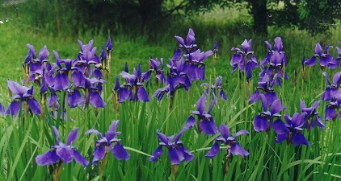

Bar plots with error bars are very frequently used in the environmental sciences to represent the variation in a continuous variable within one or more categorical variables. These are not always straightforward to make with the base functions in R. This page introduces you to making these plots with the package ggplot2.
Before you get started, read the page on the basics of plotting with ggplot and install the package ggplot2.
library(ggplot2)
In this examples, let’s use a data set that is already in R with the length and width of floral parts for three species of iris. First, load the data set:
data(iris)To contrast a variable across species, we first need to summarise the data to obtain means and a measure of variation for each of the three species in the data set. There are several ways to do this in R, but we like the summarise and group_by functions in the package dplyr. See here for more details on using dplyr for summarising data.
The following code will make a new data frame with the summary data per species.
library(dplyr)
Iris_summary <- iris %>% # the names of the new data frame and the data frame to be summarised
group_by(Species) %>% # the grouping variable
summarise(mean_PL = mean(Petal.Length), # calculates the mean of each group
sd_PL = sd(Petal.Length), # calculates the standard deviation of each group
n_PL = n(), # calculates the sample size per group
SE_PL = sd(Petal.Length)/sqrt(n())) # calculates the standard error of each groupWe can now make a bar plot of means vs species, with standard deviations or standard errors as the error bar. The following code uses the standard deviations.
IrisPlot <- ggplot(Iris_summary, aes(Species, mean_PL)) +
geom_col() +
geom_errorbar(aes(ymin=mean_PL-sd_PL, ymax=mean_PL + sd_PL), width=0.2)
IrisPlot + labs(y="Petal length (cm) +/- s.d.", x = "Species") + theme_classic()
geom_col uses the value of the y variable (mean_PL) as the height of the bars.
In the geom_errorbar code, ymin and ymax are the top and bottom of the error bars (defined here as mean +/- sd), and width defines how wide the error bars are.
###Further help
To further customise the aesthetics of the graph, including colour and formatting, see our other ggplot help pages:
* altering the overall appearance
* adding titles and axis names
* colours and symbols
Help on all the ggplot functions can be found at the The master ggplot help site.
A useful cheat sheet on commonly used functions can be downloaded here.
Chang, W (2012) R Graphics cookbook. O’Reilly Media. - a guide to ggplot with online help on making bar and line graphs with error bars here
Author: Alistair Poore (small edits by Will Cornwell)
Last updated:
## [1] "Thu Jan 20 13:53:55 2022"